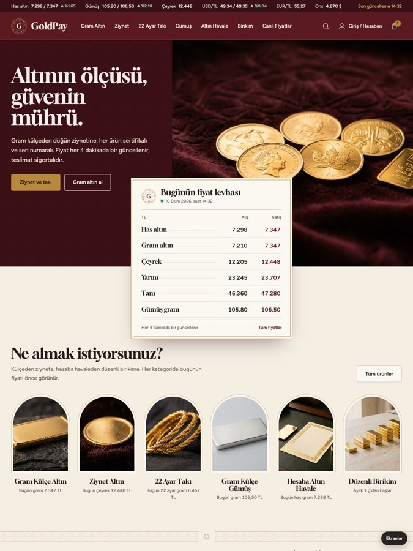

Seçenek 4 · yeniMühür · Köklü kuyumcu güveni, kurumsal dille
Güvendiğiniz aile kuyumcusunun bugünün dijital güvencesiyle buluştuğu hâli: bordo ve fildişi zemin, GoldPay'in kendi mührü (ortasında G, çevresinde "GoldPay · Kıymetli Madenler"), ürünlerde 999.9 ve 22 ayar damgaları. Ana sayfada kuyumcu vitrinindeki gibi canlı oynayan bir "Bugünün fiyat levhası", düğün ve hediye ziynet setleri var. Telefonda menü bordo bir panelde açılıyor: her kategori yuvarlak madalyon görselli, altında bugünün fiyatı; alt kategoriler görselli kutucuklarla açılıyor.
Seçenek 4'ü incele